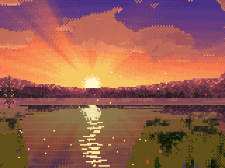
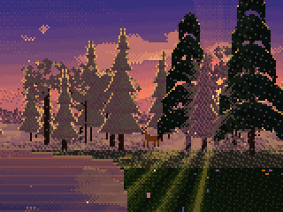
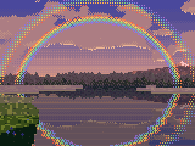
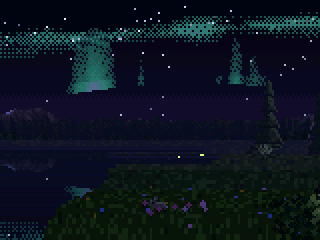

What it is
Hold the Core2 like a window. Turn and the world wraps around you; tip it forward and you walk. The world is dreamt up in front of you as you go: forests, lakes and meadows drift past, weather rolls in and clears, light falls in shafts through the trees, and a rainbow, a murmuration, an aurora or a deer might be waiting. Everything you hear is synthesized live, and the motor in your hands is the bass. Nothing is saved and nothing behind you is kept. You can only go further in.




How to walk
- Hold it level — you stand still. Nothing ever walks for you.
- Tip forward — walk; further is faster. Level it again to stop.
- Turn — look around. The screen is a little window: the world stays put while the frame sweeps past it, and near trees slide across far ones.
- Long press the screen — sound off or on. The motor keeps playing the world in your hands either way.
- Trees, boulders, cliffs and lakes are solid. Walk into one and you feel the bump and stop; look around and find another way. Clip the edge of one and you slide past.
- Walk steadily and music drifts in, a passage at a time. Stand still and it dissolves into the forest; the crickets come back and the animals come closer.
Install on Core2
Chrome or Edge · USB data cable · board powered on.